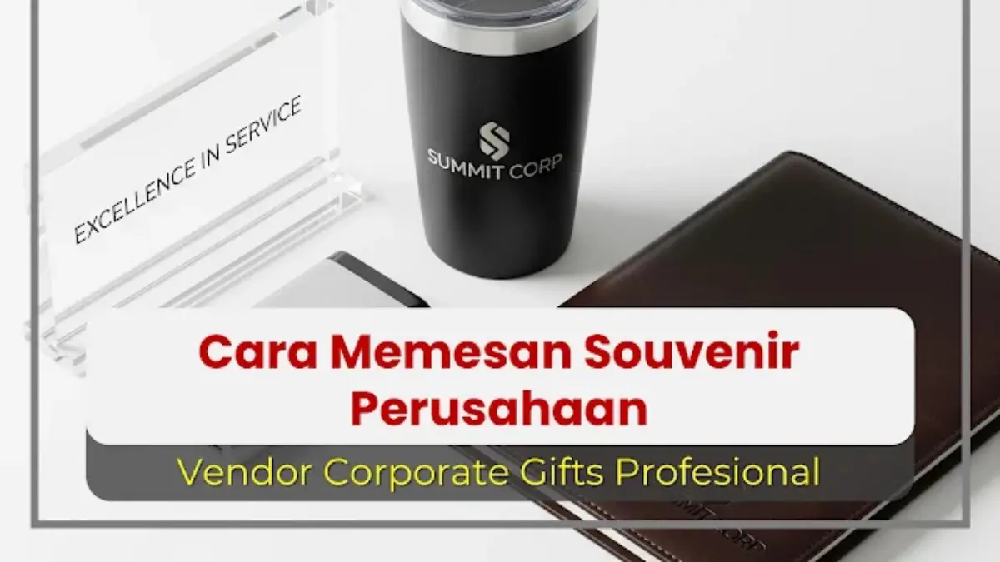

Corporate Gifts ID - Cara memesan souvenir perusahaan yang tepat terdiri dari 6 langkah utama, yaitu menentukan tujuan dan anggaran, memilih jenis produk, menyiapkan file desain vektor, menyeleksi vendor terpercaya, menyetujui mockup pra-produksi, dan memastikan proses produksi hingga pengiriman berjalan lancar. Dengan mengikuti keenam tahapan ini secara berurutan, perusahaan dapat menghindari risiko kesalahan desain, pembengkakan anggaran (overbudget), dan hasil akhir souvenir yang tidak sesuai dengan standar citra korporat.
Memesan merchandise atau cinderamata kantor untuk pertama kalinya memang sering kali membingungkan bagi tim panitia pengadaan, Human Resources (HR), maupun Marketing. Banyaknya variasi barang di katalog, pertimbangan teknik sablon versus grafir laser, hingga ketatnya tenggat waktu acara menjadi tantangan tersendiri. Panduan komprehensif berikut menguraikan keseluruhan alur pemesanan secara sistematis agar proses pengadaan souvenir Anda berjalan efisien, hemat biaya, dan memberikan dampak branding yang membanggakan.
Poin Kunci Panduan Pemesanan Souvenir:
- Perencanaan Matang: Pemetaan profil audiens dan batasan total anggaran (RAB) menjadi penentu arah seleksi produk sejak awal.
- Standar Desain Vektor: Format file AI, EPS, CDR, atau PDF beresolusi tinggi mutlak diperlukan untuk hasil cetak dan ukiran monogram yang tajam.
- Uji Sampel & Mockup: Mockup visual digital dan persetujuan sampel fisik meminimalkan risiko kesalahan cetak massal hingga titik nol.
- Transparansi SLA & Garansi: Vendor berbadan hukum resmi memberikan jaminan penggantian unit cacat dan kepastian jadwal kirim sebelum hari-H acara.
Langkah 1: Fondasi Proyek - Tentukan Tujuan, Audiens, dan Anggaran
Langkah pertama adalah fondasi yang paling krusial karena keputusan di tahap awal ini akan memandu seluruh tahapan pengadaan berikutnya.
Menentukan Tujuan Pemberian Merchandise
Setiap agenda korporat memiliki objektif yang berbeda. Identifikasi tujuan utama pengadaan Anda:
- Branding Massal & Promosi: Misalnya giveaway pameran dagang (expo) atau seminar umum, fokus utama berada pada kuantitas volume besar dan fungsi harian dengan harga bersahabat.
- Apresiasi Klien VIP & Mitra B2B: Fokus utama terletak pada nilai eksklusivitas, material mewah seperti kulit asli atau logam gravir, dan kemasan hardbox premium.
- Internal Karyawan & Onboarding: Fokus pada nilai utilitas kerja harian, kenyamanan penggunaan, dan instrumen pembangun loyalitas tim (employee wellness).
Memahami Profil dan Karakter Audiens Penerima
Ketahui secara spesifik siapa yang akan menerima cinderamata tersebut. Hadiah yang terasa istimewa bagi staf lapangan mungkin dinilai standar bagi jajaran komisaris atau direksi. Menyelaraskan produk dengan latar belakang profesi dan usia penerima memastikan souvenir benar-benar disimpan dan digunakan secara berkesinambungan.
Menetapkan Anggaran Pengadaan yang Realistis
Anggaran bukan sekadar harga satuan produk di katalog, melainkan total biaya perolehan (Total Cost of Ownership). Pastikan rincian anggaran telah mencakup biaya kustomisasi cetak, pembuatan master klise logo, kotak kemasan eksklusif, hingga estimasi ongkos kirim ekspedisi ke lokasi kantor Anda.
Langkah 2: Brainstorming dan Seleksi Produk Sesuai Kebutuhan
Setelah fondasi anggaran dan tujuan ditetapkan, masuklah ke tahap kurasi produk. Hindari memilih barang hanya karena faktor harga termurah. Pertimbangkan tiga pilar utama:
- Fungsionalitas Nyata: Semakin sering barang tersebut digunakan dalam aktivitas harian penerima, semakin lama pesan merek perusahaan melekat di benak mereka.
- Kualitas Material: Mutu fisik produk cinderamata adalah cerminan langsung dari reputasi dan profesionalisme perusahaan Anda di mata publik.
- Relevansi Konteks: Pastikan jenis souvenir selaras dengan tema acara, baik itu seminar edukasi, gathering tahunan, maupun rapat kerja resmi.
Sebagai referensi, Anda dapat mengeksplorasi ragam souvenir kantor fungsional seperti tumbler stainless SUS304 dan agenda kerja, atau memilih paket souvenir custom VIP untuk jajaran eksekutif mitra bisnis.

Penyusunan mockup digital dan kesiapan file logo vektor memastikan akurasi visual produk sebelum masuk ke lini produksi massal.
Langkah 3: Menyiapkan Materi Branding dan File Desain Presisi
Kerapian visual branding adalah kunci utama cinderamata korporat. Produk terbaik sekalipun akan kehilangan wibawanya apabila cetakan logo tampak buram, pecah, atau memiliki proporsi warna yang melenceng dari pedoman identitas resmi.
- Sediakan Logo Format Vektor: Selalu kirimkan file logo master dalam ekstensi vektor seperti
.AI,.EPS,.CDR, atau.PDFvektor. Format ini dapat diskalakan ke berbagai dimensi produk tanpa mengalami degradasi resolusi. - Cantumkan Pedoman Brand Guidelines: Sertakan kode warna spesifik (Pantone atau CMYK) serta batas ruang aman logo agar hasil akhir cetak konsisten 100% dengan identitas korporat.
Matriks 6 Langkah Pengadaan Souvenir Perusahaan
Gunakan tabel matriks alur kerja berikut sebagai panduan checklist bagi tim komite pengadaan di perusahaan Anda:
| Tahapan Pengadaan | Aktivitas Kunci | Output & Target Keberhasilan | Potensi Risiko Jika Terlewat |
|---|---|---|---|
| 1. Fondasi Proyek | Menentukan tujuan, target audiens, dan batas pagu anggaran. | Dokumen Kerangka Acuan Kerja (KAK) dan RAB yang disetujui manajemen. | Pembengkakan biaya dan salah sasaran profil penerima. |
| 2. Kurasi Produk | Memilih item fungsional yang relevan dengan tema agenda acara. | Daftar spesifikasi item souvenir yang siap diajukan ke vendor. | Barang tidak terpakai dan langsung dibuang oleh penerima. |
| 3. Kesiapan Desain | Menyiapkan file master logo vektor dan panduan warna Pantone. | Aset digital siap olah tanpa perlu proses revisi format berulang. | Hasil sablon atau gravir pecah, buram, dan warna melenceng. |
| 4. Seleksi Vendor | Evaluasi portofolio, legalitas faktur pajak, dan transparansi penawaran. | Surat Perjanjian Kerja (SPK) atau Purchase Order (PO) resmi. | Keterlambatan jadwal pengiriman dan vendor tidak bertanggung jawab. |
| 5. Approval Mockup | Pemeriksaan detail posisi logo, proporsi ukuran, dan proofing fisik. | Form approval mockup bertanda tangan sebelum cetak massal. | Kesalahan ketik (typo) atau tata letak logo pada ribuan pcs. |
| 6. QC & Pengiriman | Monitoring lini produksi, quality check menyeluruh, dan ekspedisi aman. | Souvenir diterima utuh, rapi, dan tepat waktu sebelum hari-H. | Barang rusak saat transit dan acara berlangsung tanpa souvenir. |
Langkah 4: Memilih Mitra yang Tepat melalui Seleksi Vendor Profesional
Vendor bukan sekadar penyedia barang, melainkan mitra strategis produksi Anda. Memilih vendor yang tepat menjadi penentu utama kelancaran pengadaan. Gunakan checklist evaluasi berikut:
- Portofolio dan Legalitas B2B: Pastikan vendor memiliki rekam jejak menangani korporasi besar, instansi BUMN, maupun institusi pemerintah lengkap dengan fasilitas faktur pajak resmi.
- Komunikasi Proaktif dan Konsultatif: Vendor profesional siap memberikan solusi alternatif material dan teknik cetak yang paling efisien bagi anggaran Anda.
- Transparansi Rencana Anggaran Biaya (RAB): Penawaran harga harus merinci komponen biaya secara jelas tanpa ada biaya tersembunyi (hidden fees).
- Jaminan Garansi Kualitas: Pastikan ada klausul garansi tertulis penggantian unit jika terjadi cacat produksi atau keterlambatan pengiriman.
Langkah 5: Tahap Kritis - Review dan Persetujuan Mockup Digital
Sebelum ribuan unit diproduksi di lini pabrik, vendor akan menerbitkan lembar mockup digital sebagai visualisasi akhir produk. Ini adalah tahap paling penting untuk melakukan verifikasi ketat terhadap:
- Posisi dan Proporsi Logo: Pastikan penempatan logo seimbang dan tidak terlalu rapat dengan tepian produk.
- Kesesuaian Warna: Periksa kesesuaian palet warna terhadap standar identitas merek Anda.
- Ketepatan Teks dan Ejaan: Teliti kembali nama acara, slogan, atau tanggal pelaksanaan untuk mencegah terjadinya saltik (typo).
Jangan pernah memberikan persetujuan produksi massal sebelum seluruh detail visual pada lembar mockup disetujui secara resmi oleh tim internal Anda.
Langkah 6: Proses Produksi, Quality Control (QC), dan Pengiriman Tepat Waktu
Setelah tahap persetujuan mockup selesai, proses masuk ke fase eksekusi akhir:
- Jadwal Produksi Terstruktur: Tim manufaktur memulai proses pembuatan sesuai Service Level Agreement (SLA) yang disepakati bersama.
- Kontrol Kualitas Berlapis (Quality Control): Setiap unit diperiksa secara teliti untuk memastikan bebas dari cacat fisik dan hasil kustomisasi identik dengan sampel mockup.
- Pengemasan Aman & Distribusi Logistik: Produk dikemas rapi menggunakan bubble wrap dan kardus master tebal untuk menjamin keselamatan barang selama transit pengiriman menuju kantor Anda.
Kesimpulan: Membangun Kemitraan Pengadaan yang Sukses
Memesan souvenir perusahaan pada hakikatnya adalah proses kolaborasi strategis yang memadukan perencanaan terstruktur, kreativitas desain, dan eksekusi manufaktur yang presisi. Dengan mengikuti 6 langkah mudah di atas, Anda dapat mentransformasikan proses pengadaan yang awalnya terasa rumit menjadi agenda yang tertata rapi dan membuahkan hasil memuaskan.
Kunci keberhasilan utama terletak pada pemilihan mitra vendor yang bertindak sebagai konsultan terpercaya di setiap tahapan.
Siap memulai langkah pengadaan souvenir kantor Anda? Tim Corporate Gifts ID siap mendampingi Anda mulai dari penyusunan konsep, pembuatan mockup gratis, hingga pengiriman produk premium bergaransi ke seluruh Indonesia.